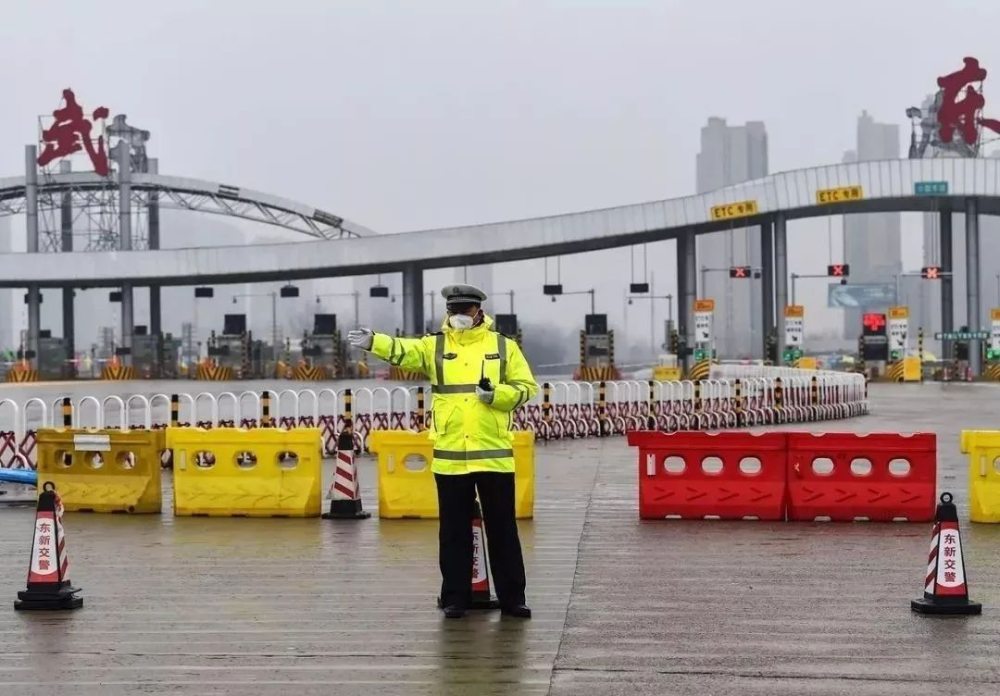
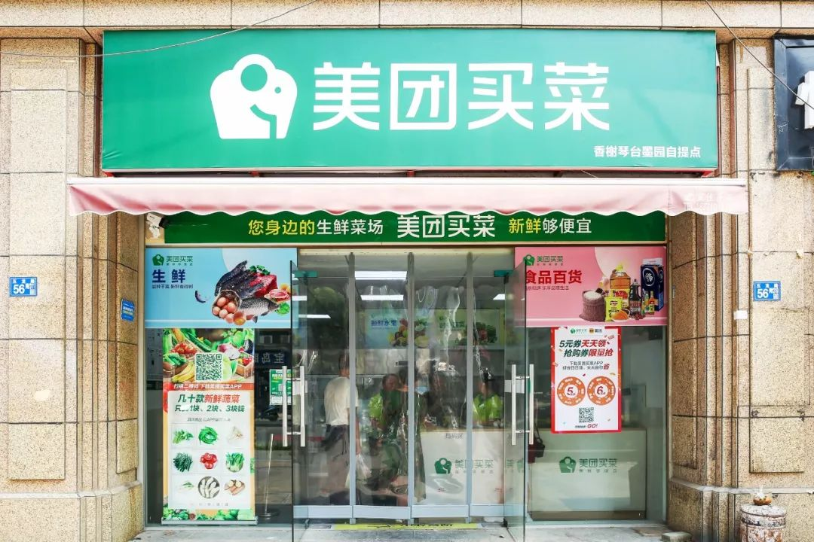

离武汉一百公里的天门，这里的疫情更令人揪心！
原文链接 备份链接 编者荐语： 马子本来计划春节出游，结果回来过个年，就因疫情封城动弹不得了。我俩见个面都难。天门疫情确实严峻，希望大家能多给予关注。瘟疫面前，命无贵贱，人人平等。 © 图文 阅路山 2020年2月4日 立春 武汉封城的 …


文/刘雀
编辑/零柒
“都害怕，总得有人往前走一步。”
这是美团买菜武汉融桥站闵捷说的话，他所在站点的马路对面就是疫情定点医院。站点一个员工的咳嗽，就吓退了其他员工，“其实我心里也挺害怕的。我觉得不行，这个工作就摆在这里，我退下去，也总有人要顶上来。”
所有奋战在武汉战“疫”一线的人，摆在他们面前的，是责任和勇气，他们的坚持给了普通市民乐观和希望。
这个时候其实不是为了挣钱盈利，真的会有种社会责任感，和武汉万科高尔夫站的吕灼一样，在疫情发生之前，美团买菜的员工从未感受到一份如此平凡的工作会在这个时刻显得如此伟大。保证菜品供应，保证居民的生活，总不能因为疫情所有人都躲着，生活还是得继续。
他们的坚持也换来了市民的爱与支持。
“年三十那天，有个客人来取菜的时候，给我带了一份家里煲的热汤。”美团买菜汉口年华站的刘迪兰说，还有一位阿姨，在群里加了我的微信，一直让我注意防护，第二天还跑到店里，给我送来口罩、洗手液，又是一通叮嘱。还有一个小区里的大姐，每天早上8点钟准时到店门口站着，帮我维持秩序，引导大家排队。有人带着狗过来取菜，她就帮人在门口牵狗等着。这种时候不能回去陪家人，我其实心里挺难受的。看到客人温暖的举动，我觉得留下来很值得。
疫情之下，人与人的互助成为一种自发的方式，城市也变得更友善了。
“我经常会很钦佩这些劳动人民，有时跟他们对上几句话，心里就有莫名的踏实。”武汉作家方方写到，“就像武汉最慌乱的那两三天里，冷风冷雨。几乎所有空空荡荡的马路上，都有一个环卫工人在风雨中一丝不苟地扫地。看到他们，你会为自己的紧张不安感到惭愧，蓦然间你就会镇定下来。”
疫情蔓延以来，美团买菜在武汉的22个站点都在全力保障春节期间市民的三餐食材供给，客服及微信社群及时响应民众的需求。以下是五位美团买菜一线工作人员的自述，讲述了五个平凡人自己的故事。

跟兄弟们并肩作战心里踏实
讲述人：陆冰冰 华中仓储服务中心（武汉）
我老家在武汉随州，大年三十是我休息的日子。那天，武汉封城，大仓缺人，在岗的同事心里也很不安。我在家完全呆不住了，决定马上出发回去。
我小孩出生不足百天，老婆在家休产假，看我要走，她心里挺难受的，说：“你去干嘛？都封城了，你也不一定去得了。”我说：“我试一下。”家里人没有再多说什么，他们怕我回去没有吃的喝的，给我打包了一些馒头、香肠和花生。这些干粮本来是为过年期间串门的亲朋好友准备的，特殊时期没人走动，正好给我带上了。
我家距离华中大仓大约190公里。那时老家还没封城，我开车顺利出去，准备进武汉。天下着小雨，路上也不见人。我开着车经过几个收费站，一路没看到人，也没有相反方向回来的车。到了收费口，警察说——“进去就出不来了”。我选择了进入武汉。

武汉收费站 图源网络
下午四点，我到了大仓。同事们都挺意外，没想到我还能回来，看我晚饭都没吃就过来了，他们挺感动的。我没觉得有什么，跟兄弟们并肩作战心里踏实。我没多说什么，马上开始帮他们检货，撸起袖子就干。
华中仓储服务中心负责22个站点的菜品供应。今年过年比较早，年前一个月，我们就把腊月二十七到正月十五能到岗的人员做了摸底，同时也做好员工关怀。这些都是为了在人员上做好准备。另外，我对接采购单，年前做好了备货，考虑到春节，每天的备货量要保证充足。
但这次封城对我们工作有一定影响。首先供应商因为武汉疫情，到货会有一定的影响。不过供货问题在持续努力下解决了，从初三开始，陆续到货。
人员方面比较紧张。我反正也没法回家了，就住宿舍。因为大仓缺人，管理人员都得自己上，我从大年初一到现在天天上班，不敢休息。交通管制之后，员工来上班都有困难。昨天，有个员工自己拉着行李步行越过两个障碍才到。我开车把他接到员工宿舍住。大家都是为了保证大仓能有充足的人手维持运转。
现在工作量比较大，我基本回宿舍就洗洗睡了。但每天晚上回去或者早上醒来，我会跟家里人视频通话。
肺炎疫情爆发之前，我们就有规定，每天上班第一件事，用84消毒液兑水拖地，到凌晨三点收场时会再做一次消毒。这次疫情严重，年前公司就开始每天给员工发放口罩。从大年三十到现在，员工上班进园区会测温，进了仓库这个门，我们主管还会帮助员工进行测温，每天以日报的形式发到群里。我们也会在现场巡检，提醒员工三四个小时换一次口罩。
在武汉，大家或多或少心里有点恐慌。我自己感觉还好，也会跟员工说，只要认真做好防护工作就没问题，大家一起顶过这几天。现在，大仓这边困难的几天已经度过了，一切都比较有序。

看到客人温暖的举动，我觉得留下来很值得
讲述人：刘迪兰 武汉汉口年华站
我每天早上出门时，5点半，天还没大亮，路上很空旷，一马平川。武汉的公共交通停了，我骑车上班需要1小时15分钟，7点前赶到店里。春节那几天，我天天都是这个作息。临近年底时爆发疫情，我们店里只剩两个人，另一个员工调去支援其他门店，这里只有我一个人撑。
我给店里做完全面消毒，理完货，早上8点准时开店迎客。以前店里一开门，来提菜的人都凑进来，有的阿姨拉着你的手说话，很亲切。现在所有人至少相隔一米交流。我在门口放了个大喇叭循环播放，提醒客人有间隔地排队，不要扎堆，保持安全距离。
上午我在店里忙，爸妈轮番从老家打视频过来。我不敢让他们知道我来上班了，只好调成语音电话，一边给客人取菜，一边忽悠他们我在睡觉。客人听了都不好意思了。
腊月二十几号疫情刚爆发时，大家比较恐慌。有顾客就来问我，现在这种情况你们还开门吗？我说，我们不开门你家有菜吃吗？当然开门。

美团买菜门店 图源网络
所以今年过年我就没有回家。我老家在荆州，昨天爸爸过生日，往年这个时候，家里都是人，可热闹了。今年没法回去给爸爸过生日了。
大年三十那天，我晚上七点钟下班回家，洗头洗澡。然后给自己炒了个青菜，做了个炒饭——加了两个鸡蛋、火腿肠，切了肉丝，还放了点白菜梗子的豪华版炒饭。我一边做饭一边给他们打视频聊天，感觉就像在家人身边一样。
我去年9月到美团，这是我的第一份工作。我这个人性子直，脾气急，到了店里工作后，天天跟中老年人打交道，经常要手把手教他们用手机下单，很磨练人的耐心和爱心。好多朋友都说我变了，脾气温和了很多。
其实跟这些大叔大妈打交道，我觉得很舒服，他们就像家里长辈一样。
年三十那天，有个客人来取菜的时候，给我带了一份家里煲的热汤。还有一位阿姨，在群里加了我的微信，一直让我注意防护，第二天还跑到店里，给我送来口罩、洗手液，又是一通叮嘱。还有一个小区里的大姐，每天早上8点钟准时到店门口站着，帮我维持秩序，引导大家排队。有人带着狗过来取菜，她就帮人在门口牵狗等着。这种时候不能回去陪家人，我其实心里挺难受的。看到客人温暖的举动，我觉得留下来很值得。

叔叔阿姨买不到到菜更着急，我必须留下
讲述人：林宇 武汉三元中央公园站
我是湖北荆州人，今年25了。去年，我离开家来武汉，入职美团买菜。过年前排班时，我看站点其他员工基本都40岁左右，得回家过年，店里人手可能不够，就主动申请留下上班。当时家里人都挺支持我的选择，我还年轻，正处于努力打拼养活自己，脱离父母经济支援的阶段，他们也希望我能多锻炼社会能力。
武汉封城的消息刚出来的时候，家里各种打电话让我回去。我妈说：“宁愿不要你挣这个钱，也要你马上回来”。听她的语气，恨不得我挂掉电话就出现在她面前。
我说我已经回不去了，店里面没什么人了，我必须要留下来，不然站点运作不起来。因为要封城了，那些周边小区的叔叔阿姨买不到菜更着急，我必须留下。
我们店在江汉区。疫情刚爆发的时候，小区里看不到一个人，平时晒太阳的，遛狗的，全都不见了，气氛很紧张。这几天大家心情慢慢放松了，零零星星能看到几个口罩、手套、护目镜全套装备齐全的人下来溜达。在家里闷久了，也想出来透口气。
我们的顾客大多是周边小区里上了年纪的长辈。有的阿姨平时来取菜，顺便遛个狗，也经常跟我拉家常，都挺熟悉了。这段时间来取菜的人都戴着口罩，互相不说话。但是在我们社区群里，大家都在讨论疫情。有的上了年纪的人会比较悲观，不知道怎么办好。我就跟他们说，要保持好心态，不要到处乱走，要相信国家一定会很快把这场疫情战斗结束，引导他们往好的方面想。
也有很多阿姨在群里跟我们说，挺感激我们在特殊时期还坚持工作。看到这种话我也很感动。

美团买菜店里取货区 图源网络
前几天有个顾客给对面社区坚持工作的社工订了鸡蛋和牛奶，要以匿名的形式送过去。她给我打电话，嘱咐我把这份礼物好好包装一下。我听了觉得很暖心。社区的工作人员从疫情爆发到现在承担了很重的职责，非常辛苦。有时候我上班，看到他们在对面也在工作，就感到我们不是在孤单地战斗。我们站点还有一个员工，这段时间也坚持上班，这种并肩作战的感觉真的很好。
在武汉，我自己租了一间十几平米的小单间。大年三十那天，我下了一包速冻饺子吃。我每天骑共享单车上班，二十几分钟到店里。但春节那几天一直下雨，我戴眼镜加口罩，那种天气下眼睛上都是白雾，看都看不清。没办法，只好天天打一把小伞走路上班。
我是家里的独生子，现在一个人在武汉，我妈跟我打电话，语气都挺着急，我爸就在边上听着。我每天跟他们汇报健康状况，尽量安慰他们，说我才二十几岁，抵抗力还是蛮好的。我也一直提醒他们，不要走亲戚，注意保护自己，毕竟家里还有个八十多岁的奶奶。等到疫情结束，肯定要第一时间回家看看爸妈和奶奶，我已经两年没有回家过年了。

顾客说，多亏还有你们
讲述人：吕灼 武汉万科高尔夫站
今年过年，我原本打算跟我女朋友回家，定一下结婚的日子，她在腊月二十六就先回安徽老家了。腊月二十九，武汉封城。当时听到这个消息我很震惊。
我负责四个社区站点。疫情的消息刚爆出来，大家都恐慌，随着武汉封城，我们上班只能踩自行车。过了两天，其中一个站的员工听顾客说，小区里有一个感染者去世了。出了这个消息，这种情况下我只能自己顶上了。这个时候其实不是为了挣钱盈利，真的会有种社会责任感，觉得必须保证菜品供应，保证居民的生活。总不能因为疫情所有人都躲着，生活还是得继续。

图源网络
反正也走不了，我跟女朋友说，结婚的事情只能推到以后，我就继续上班。她很理解，但也很担心，每次跟我通电话都各种交代，“口罩戴两层”，“到家多喷酒精”。
初二那天，两个站人手告急。我凌晨三点多出门，往六七公里外的恒达城赶。武汉现在白天街上都安安静静，更何况大半夜，路上一个人都没有，我就顺着路灯走，看到了自行车就骑。到站点忙了一上午，然后又走路加骑车，花了两个小时到高尔夫站。保证这两个站的顾客顺利把菜领到手。
第一天到站点我就震惊了——所有顾客自动排队，人跟人之间距离超过两米，出去一个，进来一个，很有秩序。这些老顾客跟原来站点的员工都很熟了，过来看到我，不认识。有的人就问，小伙子怎么换人了？我说，非常时期我来顶岗。顾客说，多亏还有你们。这几天根本没有人手换班，顾客今天看到是我，明天还看到我，后天还是我，他们也很感动。
有一天早上，我在店里忙着帮客人取菜，出了一身汗，口渴。我就问进来的那个四五十岁的大叔，对面超市几点开门，我说我想去买瓶水。大叔马上说，对面十点才开，你别等了。他马上拆开自己来取的一箱牛奶，要开一瓶给我喝。我不肯要，他还硬是要给我，我好不容易才婉拒。

努力坚持，总会度过
讲述人：闵捷 武汉融桥锦城站
腊月二十八武汉封城那天早上，公司开会，说现在疫情要密切关注，严格做好店面消毒和人员防护。我们店所在的桥口区属于疫情高发区，社区隔一条马路对面就是一家医院，距离也就五百多米，里面收的全是确诊病患。
那几天人心惶惶，我跟员工们说，如果我们都走了，顾客买菜就成了问题。我说，我跟大家呆在一起，坚持吧。这个工作就摆在这里，我退下去，也总有人要顶上来。都害怕，总得有人往前走一步。
说实话，头几天我心里真的紧张，害怕，到现在已经接受了这种情况。只要保证自己身体好，吃好睡好，不咳嗽，不发烧，我觉得问题不大。每天回到家，我都会喷酒精，洗个澡，测体温，喝一点板蓝根。不知道有没有用，但是也要去做。这是对自己负责，也是对周边的朋友、对顾客负责。
以前店里一开门，我们顾客就一窝蜂往里蹿，现在都自觉排队，隔三米一个人，反而有秩序了。有些顾客会让你把菜捡好之后放那里，他自己去领，互相没有接触。现在所有人都戴着口罩，有些顾客还戴着手套，穿雨衣一样的防护外套，戴个护目镜，全副武装做好保护措施。封城之后货源很紧张，一些年纪大的顾客不太会玩智能手机，经常抢不到菜，我就帮他去下单。
消息刚出来那几天，小区里气氛特别紧张，就跟空了似的，没有人。这两天，陆陆续续有几个人，全副武装出来锻炼身体，走路。路上也稍微能看到一些车了。武汉人说话很硬，嗓门大。最近大家都不愿意说话了，我反而觉得好像整个城市的人都变友善安静了。
年三十和初一，物资很紧张，交通也停了。没办法，我只能一家站点一家站点地送消毒液、口罩和其他物资。那几天都下雨。我就冒着雨骑着电动车，跑了六家店。每到一家店，我跟同事们就互相鼓励一下，用我们武汉话说，“搞下克”——努力坚持，总会度过的。


原文链接 备份链接 编者荐语： 马子本来计划春节出游，结果回来过个年，就因疫情封城动弹不得了。我俩见个面都难。天门疫情确实严峻，希望大家能多给予关注。瘟疫面前，命无贵贱，人人平等。 © 图文 阅路山 2020年2月4日 立春 武汉封城的 …
原文链接 备份链接 今天是武汉封城第13天，在城内留守的900万市民，除了为核酸检测、为床位奔波的人们，还有大多数人留在家中，除了采购生活物品和倒垃圾，连家门都不出。他们怎么度过封城的日子？本文作者的经历或许能代表一些普通武汉家庭的日常。 …
原文链接 备份链接 这里是大学生的新媒体实验室 ∆ 轮到你了：这是武汉长江日报摄影记者陈卓参与武汉疫情报道的第16天，调岗一年后他被临时抽调参与一线报道。武汉封城前一天，他安顿好家中老小，封城当天和妻子一起返回武汉，开始过这个充满未知与风 …
原文链接 备份链接 武汉封城，阻断了外来务工者回乡团圆的计划，他们留在城内，同样面临食品供应匮乏、日常吃喝的难题。 32岁的陕西人陈静在汉口火车站从事餐饮工作。从1月26号至今，她和店里的同事、外卖骑手们免费给5家医院的医护人员，平均每 …
原文链接 备份链接 1⁄7 *不为这座城市做点什么，最后，可能这座城市就完了……* 2020年1月30日 @雷锋小杨 坐标：武汉 大家就叫我雷锋小杨吧，我也不想留名。 我是武汉人，做酒店管理工作。我们的酒店在远城区，现在还在营 …